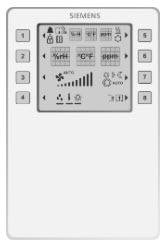
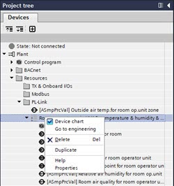
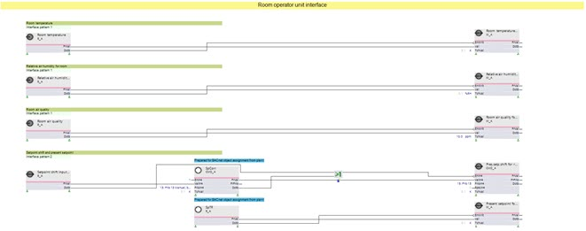

为 KNX PL-Link (QMX) 编程预定义房间操作单元
设备图表控制房间控制单元的可见性。对于库解决方案，例如 QMX3.P44，可以通过简单地启用或禁用中的相应对象来使其可见。KNX PL-Link任务。如果没有可用的库解决方案，可以在Programming根据需要菜单。

设备图表示例：
1. Open the Programming editor
- The Display view of the room operation unit is configured.
- The automation station PXC4/5/7 is configured.
- Go to Building > Building structure.
- Right-click the automation station and select Go to engineering.
- Open the KNX PL-Link task.
- Select the room operation unit in the KNX PL-Link area.
- Open the Programming task.
INFO: This can take a while. - The programming editor opens, and an empty work area displays.

2. Select predefined device chart
- In the Project tree select the Devices tab.
- Select Plant > Resources > KNX PL-Link > Room operator unit.
- All configured BACnet objects are displayed in the Project tree.
- Right-click the room operator unit and select the Device chart check box.

- An empty device chart opens.
INFO: Do not clear the Device chart check box anymore. As soon as the Device chart check box is cleared, the device chart is deleted and the program is lost. When this happens, the Undo function must be used. - Double-click the Device chart.
- The device chart displays. The device chart already is configured as per the ABT Site configuration.

3. Define the references to the Plant chart
工厂图表对设备图表的引用（反之亦然）取决于相应的程序功能。
- Select the function block in the Plan chart.
- Drag a link to the prepared input function block (marked blue) in the device chart.
- Make required changes to the device chart as required.